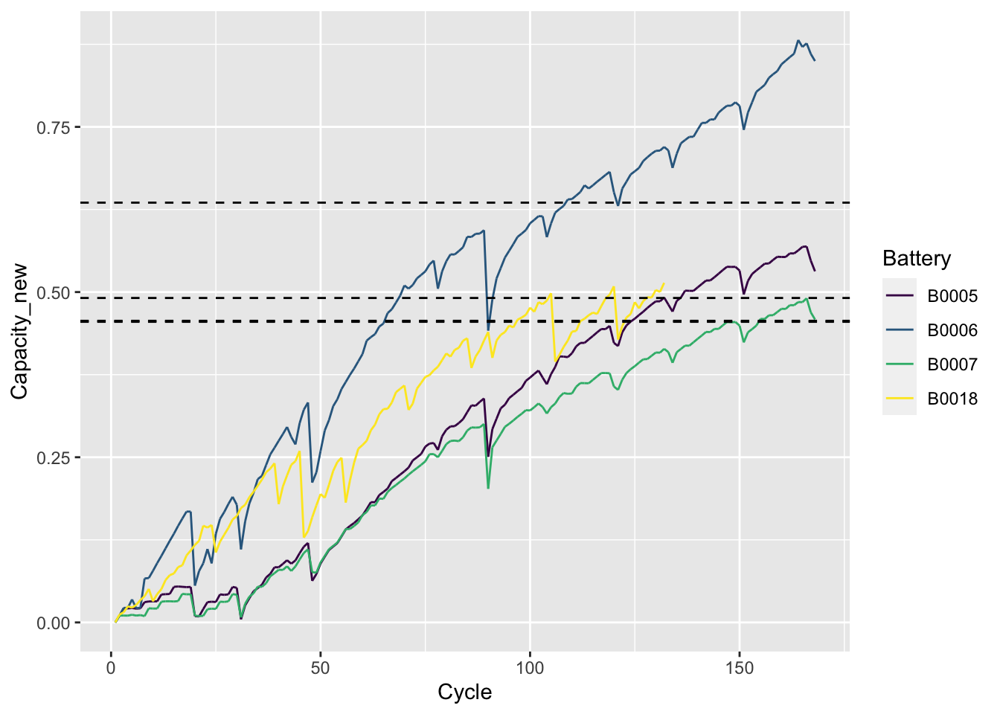

library(ggplot2)
library(tidyverse)
library(viridis)Degradation Process Review
Introduction
近年来，基于退化的可靠性技术在模型、方法和应用等方面得到快速发展。其中，在基于退化的可靠性模型方面，以随机过程理论为基础，根据工程需要，并考虑模型的简明性、实用性和适用性，已经提出了多种类型的模型，包括：
退化轨道模型（如 Paris 模型、随机斜率/截距模型、幂律模型、反应论模型）
基于 Wiener 过程的模型
基于 Gamma 过程的模型
累积损伤模型(主要是基于混合 Poisson 过程的模型）
更为一般的纯跳过程模型（如Levy.过程模利）和扩散过程模型（如随机微分方程模型）等。
在基于退化的可靠性建模方法，以数理统计理论为基础，针对模型和退化数据的类型，研究矩估计、极大似估计及 EM 算法、Bayes 估计及 MCMC算法、基于滤波的状态估计方法，以及非参数和半参数方法等，解决模型辨识和修正问题;
采用似然比检验、Bayes 因子分析等方法进行模型验证;
采用均方误差（MSE）、Akaike 信息准则(AIC)、Bayes 信息准则(BIC)、偏差信息准则(DIC)等进行模型优良性检验。
在基于退化的可靠性技术应用方面，针对机械零部件（如轴承、润滑系统）、半导体器件（如功率MOS器件）、机电部件（如感应电动机）、光电器件(如太阳电池、激光器、LED)、电子器件（如电容、蓄电池）等的退化失效过程，开展退化过程建模、可靠性评估、剩余寿命预测、可靠性试验设计：特别是加速退化试验方案设计的研究。
退化轨道模型
Wiener 退化过程模型
Wiener 过程由于其简单的结构和比较丰富的研究成果，成为目前退化过程建模中 应用最为广泛的一种模型。
Wiener 退化过程的首达时间分布具有解析形式，便于对产品寿命和可靠度的分析和计算。
Wiener 退化过程可以描述产品退化过程的时间不确定性，而且比较容易处理测量数据存在误差的情况。
通过对经典 Wiener 过程的参数引入随机性，使得 Wiener 退化过程能够描述个体差异，并且一般不会给模型参数的估计带来更多的困难。
对 Wiener 退化过程及其观测过程所构成的状态空间模型，可以采用 Kalman 滤波技术进行处理，为产品在线寿命预测、视情维修决策等提供了可行的算法和实现途径。
数据模拟产生
# 数据模拟产生
sim_dat = function(group = 6, t = 1:200, para = c(1,0.1)){
# para 指 mu,sigma
# epoch 指测量次数， group 指组数
delta_t = diff(t)
epoch = length(delta_t)
dat = matrix(NA,epoch,group+1)
dat[,1] = seq(1,epoch)
dat_unit = numeric()
for(i in 1:group){
for(j in 1:epoch) dat_unit[j] = rnorm(1,para[1]*delta_t[j],sqrt(para[2]^2*delta_t[j]))
dat[,i+1] = cumsum(dat_unit)
}
dat = data.frame(dat)
dat1 = rbind(rep(0,group+1),dat) # 加入初始值绘制点
colnames(dat1) = c("Time",paste(1:group,sep=''))
return(dat1)
}绘制退化路径图
# 绘制退化路径图
plot_path = function(data = dat1){
# 画图
p = data %>% pivot_longer(paste(1:group),
names_to = "Group",
values_to = "y") %>%
ggplot(aes(Time,y,color = Group)) +
geom_line() +
scale_color_viridis(discrete = T) +
ylab("Degradation") #+
#theme_bw() +
#theme(panel.grid = element_blank())
print(p)
}group = 6
t = 1:200
para = c(1,1)
dat = sim_dat(group = group, t = t, para = para)
knitr::kable(head(dat))| Time | 1 | 2 | 3 | 4 | 5 | 6 |
|---|---|---|---|---|---|---|
| 0 | 0.000000 | 0.0000000 | 0.0000000 | 0.0000000 | 0.0000000 | 0.000000 |
| 1 | 1.391168 | 0.2759077 | -0.3417498 | 0.5835790 | 0.9026307 | 1.097786 |
| 2 | 3.605231 | 1.1842436 | -0.5342895 | -0.2470111 | 3.1051953 | 3.320797 |
| 3 | 4.055671 | 2.1270992 | -0.0568196 | 0.3862626 | 5.0564761 | 5.809385 |
| 4 | 4.978225 | 1.7225755 | 0.7796801 | 0.5960882 | 5.8449483 | 6.170244 |
| 5 | 6.114112 | 4.3528897 | 2.2751563 | 1.5957875 | 6.9883879 | 7.897069 |
plot_path(dat)
参数估计
极大似然估计
cumsub = function(x){
#逐个相减
re = numeric()
re[1] = x[1]
for(i in 2:length(x)){
re[i] = x[i] - x[i-1]
}
return(re)
}Weiner_mle = function(par = c(1,1),data = dat){
mu = par[1]; sigma = par[2]
group = ncol(data) - 1;time = data[,1];y = data[-1,-1]
# 差分得到delta_time和delta_y
delta_time = matrix(rep(diff(time),group),length(diff(time)),group)
delta_y = matrix(NA,nrow(delta_time),group)
for(i in 1:group) delta_y[,i] = cumsub(y[,i])
logl = -1/2 * sum(log(delta_time)) - group*nrow(delta_time)*log(sigma) - sum((delta_y - mu * delta_time)^2/(2*sigma^2*delta_time),na.rm =T)
return(-logl)
}
mle_re = optim(par=c(1,1), fn = Weiner_mle,
data = dat, method = "BFGS", hessian = TRUE)
mle_re$par
[1] 0.9906313 0.9819282
$value
[1] 575.2245
$counts
function gradient
23 5
$convergence
[1] 0
$message
NULL
$hessian
[,1] [,2]
[1,] 1.238354e+03 1.581668e-04
[2,] 1.581668e-04 2.476729e+03mle_par = mle_re$par## 可靠度计算
Wiener_R = function(t = 100, threshold = 150,par = mle_par){
R = pnorm((threshold - par[1]*t)/(par[2]*sqrt(t))) - exp(2*par[1]*threshold/par[2]) * pnorm((-threshold - par[1]*t)/(par[2]*sqrt(t)))
return(R)
}
Wiener_R(t = 100, threshold = 150,par = mle_par)[1] 0.9999999# plot(Wiener_R(t = 1:300, threshold = 150,par = mle_par),type = "l")案例分析
导入数据，数据来源于NASA Ames Prognostics Center of Excellence (PCoE)，但是找不到数据下载。最后是通过 Github 获得。
liion_data = read.csv("dataset/li-ion_battery_aging.csv")
head(liion_data) Voltage_measured Current_measured Temperature_measured Current_charge
1 3.974871 -2.012528 24.38909 1.9982
2 3.951717 -2.013979 24.54475 1.9982
3 3.934352 -2.011144 24.73139 1.9982
4 3.920058 -2.013007 24.90982 1.9982
5 3.907904 -2.014400 25.10588 1.9982
6 3.897036 -2.011603 25.31702 1.9982
Voltage_charge Time Capacity id_cycle type ambient_temperature time
1 3.062 35.703 1.856487 1 discharge 24 2008
2 3.030 53.781 1.856487 1 discharge 24 2008
3 3.011 71.922 1.856487 1 discharge 24 2008
4 2.991 90.094 1.856487 1 discharge 24 2008
5 2.977 108.281 1.856487 1 discharge 24 2008
6 2.967 126.453 1.856487 1 discharge 24 2008
Battery
1 B0005
2 B0005
3 B0005
4 B0005
5 B0005
6 B0005该数据是 NASA Ames Prognostics Center of Fxcellence (PCoF）对商用锂离子 18650 电池进行充、放电试验获得的一组蓄电池容量变化数据。试验过程中，锂离子在室温下 经历 3 种不同的运行剖面，即充电、放电和测量 EIS。
充电是以恒流模式(CC)进行，在 1.5A 电流下直到电池电压达到4.2V，然后以恒压模式(CV)继续充电直到电流降到 20mA。
放电也以恒流模式进行，放电电流为2A，直到电池电压降低到2.7V。
重复充电和放电降导致蓄电池老化。对应的四个产品电池容量变化如下图所示：
liion_data %>%
ggplot(aes(id_cycle,Capacity,color = Battery)) +
geom_line() +
scale_color_viridis(discrete = T) +
xlab("Cycle") #+
#theme_bw() + theme(panel.grid = element_blank())我们直接使用充放电循环次数作为时间刻度。由于随着时间的推移，电池容量呈下降趋势。而用维纳过程来进行 RUL 预测方法是建立在退化过程有增加趋势的基础上的。为了应用该模型，对原始数据进行转换：用初始容量减去每个电池的所有容量数据。此时，失效阈值更改为初始容量减去 1.4 Ahr。
max_battery = aggregate(liion_data$Capacity,by = list(liion_data$Battery),max)
max_battery$threshold = max_battery$x - 1.4
liion_data$Capacity_new = -liion_data$Capacity + rep(max_battery[,2],as.numeric(table(liion_data$Battery)))
liion_data %>%
ggplot(aes(id_cycle,Capacity_new,color = Battery)) +
geom_line() +
scale_color_viridis(discrete = T) +
xlab("Cycle") +
#theme_bw() +
#theme(panel.grid = element_blank()) + #添加失效阈值
geom_hline(yintercept = max_battery$threshold[1],lty = 2) +
geom_hline(yintercept = max_battery$threshold[2],lty = 2) +
geom_hline(yintercept = max_battery$threshold[3],lty = 2) +
geom_hline(yintercept = max_battery$threshold[4],lty = 2) 
前面对数据进行了导入、处理以及可视化。接下来，使用经典的线性维纳过程对其进行建模。
liion_data %>%
select(Capacity_new,Battery,id_cycle) %>%
pivot_wider(
names_from = "Battery",
values_from = "Capacity_new",
values_fn = mean) -> liion_newmle_re = optim(par=c(1,1), fn = Weiner_mle,
data = data.frame(liion_new), method = "BFGS", hessian = TRUE)
mle_par = mle_re$par
mle_par[1] 0.003751909 0.017612386计算可靠度并绘图
# 计算可靠度
Wiener_R(t = 100, threshold = max_battery$threshold, par = mle_par)[1] 0.6778098 0.9301711 0.7446791 0.6747844time_region = 400
# 绘制四个电池的可靠度图
R_re = matrix(NA,time_region,4)
for(i in 1:4){
R_re[,i] = Wiener_R(t = 1:time_region, threshold = max_battery$threshold[i],par = mle_par)
}
R_re = as.data.frame(R_re)
R_re = cbind(1:time_region,R_re)
colnames(R_re) = c("time",max_battery[,1])
R_re %>% pivot_longer(max_battery[,1],
names_to = "Group",
values_to = "y") %>%
ggplot(aes(time,y,color = Group,shape = Group)) +
geom_line() +
scale_color_viridis(discrete = T) +
labs(x = "Time", y = "Reliability")